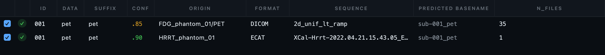
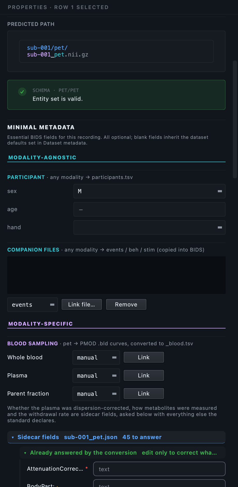
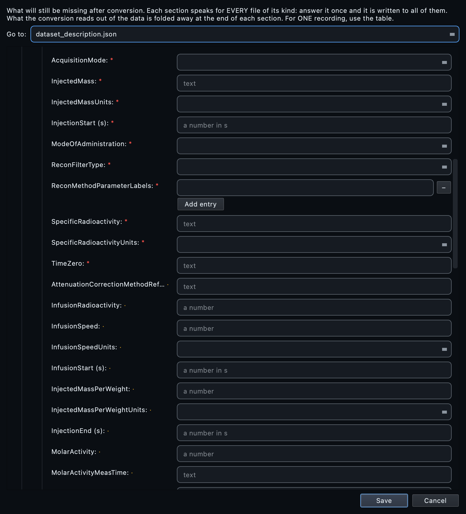
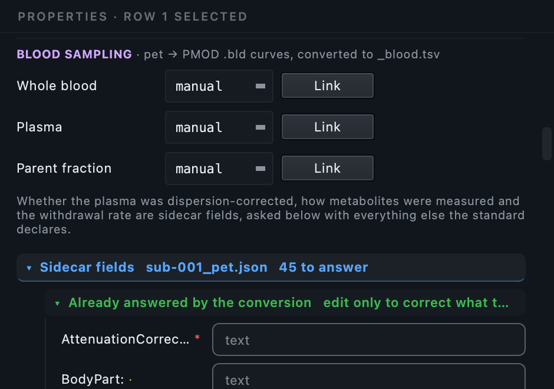
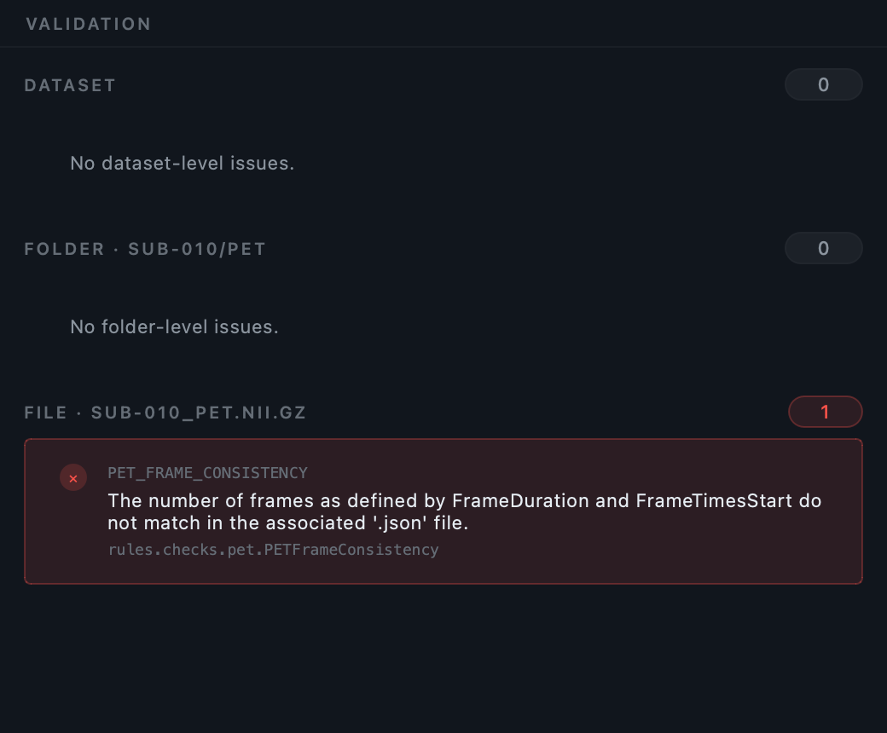
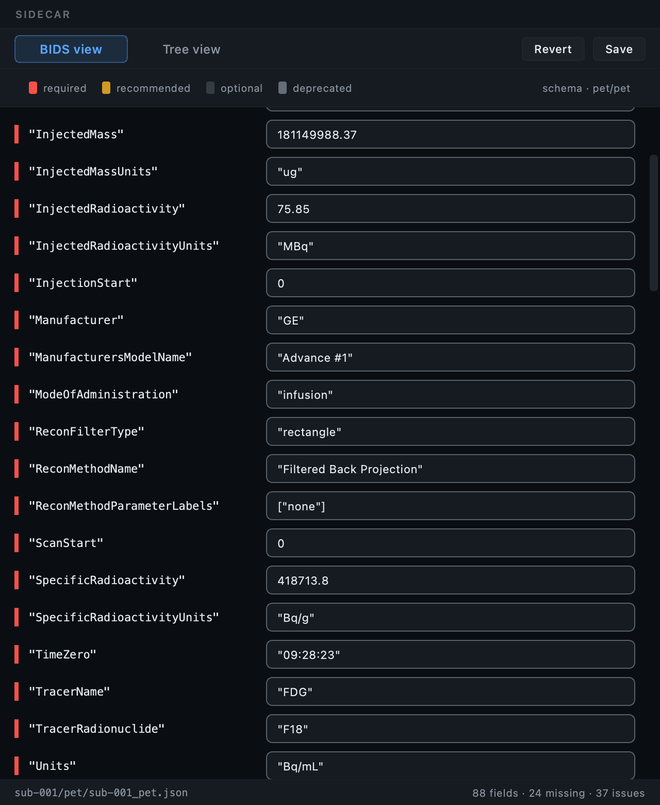

PET, start to finish.
Two PET scans in the two formats PET actually comes in, taken from a raw folder to a validated BIDS dataset. Both convert in seconds. What takes longer, and what this page is really about, is the metadata: PET asks for a great deal that no scanner writes down, and the two formats leave out different parts of it.
The GUI walkthrough explains each control once, for every modality. This page covers what is specific to PET, in the order you meet it, and it runs both formats side by side from the first step rather than leaving one to the end.
The sample dataset.
Two scans, two formats, two dose sheets
A GE Advance FDG acquisition as 35 DICOM files, with the two blood curves drawn during it; and a Siemens HRRT acquisition as a single ECAT7 file. Each comes with the dose record its own format leaves out. 8.8 MB.
Unzip it anywhere you like, for example your desktop
or a scratch folder. You do not need to put it in any particular
place, and you never point BIDS Manager at the zip itself. Inside are
two folders, raw/ and
extra_ecat/, and each becomes a project of
its own. Both are phantoms of the same tracer, so the two runs are
genuinely comparable.
A phantom is a physical test object filled with a known solution, of the kind a PET centre scans to check its scanner. It converts exactly like a subject scan, which is what makes it a good thing to practise on, and it contains no personal data at all.
Every file, and what to do with it.
Eight things are in the zip. Two you point the application at, two you read while filling a form, two are licences, and two belong to the optional ECAT exercise at the end.
| File | What is inside it | What you do with it |
|---|---|---|
raw/FDG_phantom_01/PET/35 .dcm files |
One PET acquisition, stored one slice per file, as PET scanners write it. Each file carries both a slice of the image and a copy of the acquisition metadata in its header. | Point the scan at raw/, the folder above it. You never select the DICOM files yourself; the scan finds and groups them. |
blood/whole_blood.bld |
A PMOD text export. Two columns: time in minutes, and whole blood activity in kBq/cc. Thirty-odd samples drawn by hand over the scan. | Attach it to the PET row in the properties panel, as the whole blood curve, method manual. Step 5. |
blood/plasma_parent.bld |
The same format. Its column header reads Parent [kBq/cc], an activity in kBq/cc. |
Attach it as the plasma curve, method manual. Despite the filename, see the warning below. |
dose_sheet.csv |
Nine field names with their values and units. It stands in for the sheet of paper or spreadsheet a PET centre keeps beside the scanner. | Open it in a spreadsheet or a text editor and keep it visible while you fill the metadata form in Step 4. You do not import it in the GUI. |
README.md |
Provenance, licences, and a summary of the workflow. | Read it if you plan to reuse the data. It carries the citation you owe. |
extra_ecat/HRRT_phantom_01/one .v file |
A whole PET acquisition in one 26 MB file, written by a Siemens HRRT in the ECAT7 format. No folder of slices, no per-file headers. | Nothing, until the ECAT section at the end. There you scan extra_ecat/ as a project of its own. |
extra_ecat/dose_sheet_ecat.csv |
Fifteen field names with their values and units. A different set from the one above, because an ECAT header carries less than a DICOM one. | The same as the other dose sheet, but for the ECAT scan: keep it open while you fill that project's form. |
The two LICENCE files |
The full licence texts. | Nothing, unless you redistribute the data. |
plasma_parent.bld has "parent" in its
name, but its column reads Parent [kBq/cc],
which is an activity. A parent fraction is a ratio and has
no units at all. So this file is the plasma curve,
and that is how you should attach it. Attach it as a parent
fraction and you get a file whose numbers mean something other
than what its own column says. This is not a quirk of the sample:
blood files arrive named by whoever exported them.
Where the data came from
The scan is one subject from the OpenNeuro PET brain phantoms
(PublicnEUro PN000001,
DOI 10.70883/RGN3768),
a GE Advance FDG acquisition from the NIH Clinical Center, shared
under CC BY 4.0. The blood curves come from the
PET2BIDS
project's own test data, under MIT. If you reuse either, the README in
the download carries the credit you owe.
PET arrives in two formats, and they are not equivalent.
Almost every other modality in this documentation has one shape. PET has two, and which one you are handed decides how much work the metadata step is going to be. That is why this page runs both from here on.
| DICOM | ECAT7 | |
|---|---|---|
| Looks like | A folder of files, one slice each. | One large file holding the whole acquisition. |
| In this download | raw/, 35 files, GE Advance. |
extra_ecat/, one 26 MB file, Siemens HRRT. |
| Written by | Most clinical PET and PET/CT systems. | Siemens HRRT and older CTI systems. |
| Read through | dcm2niix, then pet2bids for the fields dcm2niix omits. | pet2bids. |
| Recognised by | The DICM marker inside the file. |
The MATRIX7x signature inside the file. |
| Records the dose | Yes, and the reconstruction filter. | No, and no filter either. |
| Records how the tracer went in | Neither. That is what the dose sheets are for. | |
| Required fields it leaves out | Nine. | Fourteen, six of them the same nine. |
BIDS Manager looks inside every file. An ECAT renamed by your site
or by a transfer tool is still an ECAT, and a DICOM whose name is
a bare identifier with no extension, which is what Philips writes,
is still a DICOM. Nothing here depends on a
.dcm or a
.v at the end of a name.
Create two projects, then scan each one.
On the Home tab choose Create, give
the dataset a folder and a name, for example
pet_dicom. That folder becomes the BIDS
dataset, and everything you do from now on is recorded into it. Then
create a second one, pet_ecat.
In the Converter, press Scan and
point the first project at the download's
raw/ folder and the second at
extra_ecat/. Point at the folder itself,
not at PET/ and not at a single file. The
scan walks down through everything below it.
Both scans are phantoms, both become
sub-001, and a single project would be
asking for a name collision on purpose. BIDS Manager would catch
it and refuse to convert, which is the right behaviour and not
what you came here to see. Keeping them apart also lets you
compare two finished datasets at the end.
What the scan does with PET
- The 35 DICOM files become one row. They are slices of a single acquisition, grouped by the series identifiers in their headers. The ECAT file becomes one row too, because it was one file to begin with.
- The blood files are not recordings, so they do not appear as rows. You attach them to the PET row in Step 5. Only the DICOM scan has them.
-
Neither dose sheet is read here. A
.csvis not a recording either. You read it yourself in Step 4.
What you should see now: one row in each project, no skips, a green status. The chips read one valid.
It runs the converter once, quietly, and reads what came out, so the metadata form in Step 4 can show you which fields the conversion is going to fill by itself instead of asking you for them. On scans this size it costs a second or two, and it is what makes the difference between the two formats visible before you have converted anything.
Read both tables before you change anything.
One row each, and for these two datasets nothing in either needs correcting. Read them anyway: on your own data this is the step where mistakes are cheap to fix.

format column naming each.
| Column | DICOM project | ECAT project |
|---|---|---|
id |
001 in both. A DICOM subject comes from the patient identifiers in the headers, an ECAT subject from the folder. Neither comes from the filename. |
|
data, suffix |
pet and pet. |
|
conf |
.85, the score dcm2niix's own guess carries. |
.90, higher. An ECAT file is unambiguously a PET acquisition; a DICOM has to be read and classified. |
format |
DICOM |
ECAT |
origin |
FDG_phantom_01/PET |
HRRT_phantom_01 |
n_files |
35, the slices grouped into one acquisition. |
1. The whole scan is the file. |
sequence |
2d_unif_lt_ramp, the protocol name the scanner recorded. |
The filename. ECAT has no protocol tag to read, so there is nothing better to show. |
predicted basename |
sub-001_pet in both, which is exactly why they are two projects. |
|
What the scan worked out but did not fill in
Vendors write the interesting PET fields as free text, in whatever spelling the console used. The scan reads them and derives what it can. This is the first place the two formats visibly differ.
From the DICOM it gets five values, all correct:
- tracer
FDG, read out ofFDG -- fluorodeoxyglucose - radionuclide
F18, read out of18F. Other scanners write it as^18^Fluorine, and that is understood too - reconstruction method
2D Filtered Backprojection - reconstruction filter
rectangle 4.0 mm, from three separate values the header splits it across - injected radioactivity
75.85 MBq, converted from the75850000becquerels the header stores
From the ECAT it gets one:
F18. There is no tracer name, no
reconstruction method and no usable dose in that header. Nothing has
gone wrong; the format simply carries less.
None of these appear as columns. They are offered inside the fields they belong to, in the properties panel and the metadata form, with the value read from your own files at the top of the list. Nothing is filled in silently, because a vendor writes these as free text and a wrong tracer is worse than a blank one.

What each conversion answers by itself.
Before you type anything, it is worth knowing how much you will not have to, and it is not the same for the two formats. Converting the DICOM scan writes 33 fields into the sidecar, straight from the headers. Converting the ECAT writes 50, because pet2bids reads that format's header differently and fills more of the frame of the sidecar. Neither number is the interesting one; what matters is which fields.
Nine representative fields from the DICOM conversion:
| Field | Value on this scan | Where it came from |
|---|---|---|
TracerName | FDG | the vendor's radiopharmaceutical string |
TracerRadionuclide | F18 | the same, parsed |
Units | Bq/mL | the image units the scanner recorded |
FrameTimesStart, FrameDuration | [0], [14400] | the acquisition timing |
TimeZero | 09:28:23 | the scan start recorded by the scanner |
InjectedRadioactivity | 75.85 | the dose, which this scanner did record |
ReconMethodName | Filtered Back Projection | the reconstruction description |
Manufacturer, InstitutionName | GE, National Institutes of Health | the equipment tags |
ImageDecayCorrected | true | the correction flags |
Two of those are worth pausing on, because they are often assumed to
be your job. TimeZero is the instant every
frame time and every blood sample is measured against, and
InjectedRadioactivity is the dose. This
scanner wrote both, so you do not have to. Many do not, and the ECAT
in this download is one of them.
Where the two formats part company
Convert both, validate both without letting the metadata step write placeholders, and each reports required fields missing. The DICOM reports nine, the ECAT fourteen, and only six of them overlap:
| Missing from both (6) | DICOM only (3) | ECAT only (8) |
|---|---|---|
InjectedMassInjectedMassUnitsSpecificRadioactivitySpecificRadioactivityUnitsModeOfAdministrationAcquisitionMode
|
ReconMethodParameterLabelsReconMethodParameterUnitsReconMethodParameterValues
|
TracerNameInjectedRadioactivityInjectedRadioactivityUnitsImageDecayCorrectedImageDecayCorrectionTimeAttenuationCorrectionReconFilterTypeReconFilterSize
|
Read the middle column and the right one together and you have the difference between the two formats in one line. The GE DICOM recorded what it injected, what it corrected for and what filter it reconstructed with, and left the reconstruction parameters unstated. The HRRT's ECAT header recorded none of the first group, down to which tracer it was. Six fields are missing from both, because they come from the radiochemistry lab and no scanner of either kind has ever seen them.
Neither format is worse. They were designed by different people for different purposes, decades apart, and BIDS asks for the union of what both leave out. That is the argument for a metadata step that reads the standard rather than one converter.
TimeZero is only usable if the
scanner's clock was sane. One of the published phantom files
records a start before the epoch, which renders as a
plausible-looking time of day in 1936. Deriving
TimeZero from it would make every time
in the dataset wrong while looking perfectly normal. BIDS Manager
refuses to derive it from an impossible value and asks you for it
instead. This scan is not affected.
Those 33 land in sub-001_pet.json when you
convert, in Step 6. You can see them before that, without converting
anything: the metadata form in Step 4 folds them away under
Already answered by the conversion, so the questions
it puts to you are only the ones nothing could answer for you.
Fill each template from its own dose sheet.
Each project has a dose sheet, and they are different files because the two formats leave out different things. Open the one that belongs to the project you are working on, in a spreadsheet or a text editor, and put it beside the application. This is the piece of paper a PET centre keeps by the scanner.
| Project | Dose sheet | Holds |
|---|---|---|
pet_dicom |
dose_sheet.csv |
Nine fields: exactly what the validator still reports as missing after converting the DICOM scan. |
pet_ecat |
extra_ecat/dose_sheet_ecat.csv |
Fifteen fields: the nine that are errors, plus six that are only recommended but are known for that acquisition and worth stating. |
Neither list is an arbitrary selection. We converted each scan, asked the validator what was still missing, and wrote that down. The values are the ones published with the phantom datasets, not invented.
Open the form
Below the inventory table, press Dataset metadata. Scroll to the PET sections. A section covers every file of its kind at once, so an answer typed here is written into every PET scan in the study, not just this one. With a single scan the distinction does not bite, but it is the reason the form is organised this way.

The nine fields, one at a time
| Field | Type this | What it means, and why no scanner knows it |
|---|---|---|
InjectedMass |
181149988.37 |
The mass of the radiolabelled compound injected. The scanner measures activity, not mass; the mass comes from the radiochemistry lab. |
InjectedMassUnits |
ug |
Micrograms. BIDS makes you state the unit rather than assume one, because labs record this in µg, mg, nmol and µmol. |
SpecificRadioactivity |
418713.8 |
Activity per unit mass of tracer. It follows from the dose and the mass, and the lab measures it at a stated time. |
SpecificRadioactivityUnits |
Bq/g |
The unit for the value above. |
ModeOfAdministration |
infusion |
How the tracer entered the body: a bolus, an infusion, or both. It changes how the time-activity curve should be modelled, and only the person who gave it knows. |
AcquisitionMode |
list mode |
How the scanner collected counts. Not the same thing as the reconstruction, and not in the header. |
ReconMethodParameterLabels |
none |
The names of the reconstruction's parameters. Filtered back projection here has none, so the honest answer is "none" rather than a blank. |
ReconMethodParameterUnits |
none |
Their units. Same reasoning. |
ReconMethodParameterValues |
0 |
Their values. An iterative reconstruction would carry the iterations and subsets here instead. |
Three of those nine are lists in the standard, not single values,
and one is a number rather than text. You type what you have and
the value is converted into the shape the standard declares before
it is written, so 0 reaches the file as
the number 0 in a list, not as the string "0". This is a common
way for a hand-edited PET sidecar to fail validation.
The same form, a different set of questions
Open the ECAT project's form and the layout is identical, because the
form is built from the standard rather than from the file. What
changes is which boxes are already filled. Under
Already answered by the conversion you will find the
ECAT's Units,
TimeZero and frame timing; in the fields
it is asking you for, you will find the dose and the reconstruction
filter, which on the DICOM scan were answered for you.
TimeZero against your own records.
The value derived from the file is
15:43:05, the scan start, which is
also what its filename says. The published reference for this
acquisition gives 15:04:05, the
injection, thirty-nine minutes earlier. BIDS defines
TimeZero as the instant every frame
time and every blood sample is measured against, and for a
quantitative analysis that is the injection. A converter can only
offer the clock it was given; if you know the injection time, set
it.
Fields you can leave alone
The PET sections list far more than nine fields, and most of the rest are recommended rather than required: infusion speed, molar activity, the pharmaceutical dose regimen, the tracer's molecular weight. If your study did not record them, leave them empty. A blank recommended field is a warning you have read and decided about; a made-up value is worse than nothing.
Two are worth filling on real data even though they are only
recommended: BodyPart and
InstitutionalDepartmentName. Both are
trivial to answer and both are the sort of thing a reader of your
dataset will want.
When one scan differs from the rest
Everything above is a statement about every PET file in the study. If one session used a different tracer batch, or one run had its own injected dose, select that row and answer in the properties panel instead. A per-recording answer wins for that recording alone, and an inherited value is shown greyed with a tooltip naming where it came from, so you can always tell what you set from what you are inheriting.
Attach the blood curves. DICOM project only.
Only the DICOM scan in this download has blood. Nothing about blood depends on the image format, though: the curves are separate files and would attach to an ECAT row in exactly the same way. Skip to Step 6 for the ECAT project.
Quantitative PET rests on knowing what the tracer was doing in the
blood while the scanner counted it in tissue. BIDS has a place for
that, and your lab probably has it as a PMOD export. In this download
it is the two .bld files.
Select the PET row, then find BLOOD SAMPLING in the properties panel on the right. Three curves can be attached separately, and this dataset has two of them.

| Curve | File to link | Method |
|---|---|---|
| Whole blood | blood/whole_blood.bld | manual |
| Plasma | blood/plasma_parent.bld | manual |
| Parent fraction | leave empty | — |
Why the method matters
Marking a curve manual or automatic
is not a description you can skip. Hand-drawn samples and an
autosampler have different time resolution, so the standard keeps them
in separate files, distinguished by an entity in the filename. Set
these two to manual and the conversion writes
sub-001_recording-manual_blood.tsv. Had
they come from an autosampler it would be
recording-autosampler instead. The answer
changes the output, not just the description inside it.
What comes out
The two curves are merged into one table, with the times converted from minutes to seconds, because that is what BIDS asks for:
time plasma_radioactivity whole_blood_radioactivity 25.2 0.000874 0.000885 43.2 0.00603 0.0192 51.0 1.38 0.92
Nineteen samples, one row each. The times were minutes in the
.bld files and are seconds here, which is
what BIDS asks for. They are written at full precision, so the second
sample is really
43.199999999999996: that is the unit
conversion showing its arithmetic, not anything being wrong.
Alongside it, sub-001_recording-manual_blood.json
describes
those columns and records which curves are present, through the
WholeBloodAvail,
PlasmaAvail and
MetaboliteAvail flags. Those flags are set
from the columns that actually exist, so they cannot claim a curve you
did not supply.
Because the column inside
plasma_parent.bld is headed
Parent, the converter warns that a
parent fraction has to be unitless. It says this whichever slot
you attach the file to, so the warning alone does not tell you
whether you got it right. What tells you is the output. Attached
as plasma, you get a
plasma_radioactivity column and
PlasmaAvail: true, which is correct.
Attached as the parent fraction, you get a
metabolite_parent_fraction column and
MetaboliteAvail: true, and the same
activities in kBq/cc are now presented as a ratio. Nothing fails.
The file just says something untrue about itself.
Convert both.
Open the BIDS preview in the bottom panel first. It shows the exact tree the conversion will write. You should see the image, its sidecar, and the two blood files:
pet_tutorial/
├── dataset_description.json
├── README
└── sub-001/
└── pet/
├── sub-001_pet.nii.gz
├── sub-001_pet.json
├── sub-001_recording-manual_blood.tsv
└── sub-001_recording-manual_blood.json
Then press Run conversion. The DICOM goes to
dcm2niix; the blood curves go to
pet2bids; and in the other project the
ECAT goes to pet2bids as well. You never
choose a backend: the content of each row decides, which is the same
reason a renamed file still converts.
What happens after the files are written
Three things run automatically, in the staging folder, before anything is committed to your dataset.
- The DICOM keys are renamed to their BIDS names. dcm2niix writes some fields under the spelling the DICOM standard uses, which is not always the spelling BIDS uses.
- Types are repaired against the standard. Several PET fields are per-frame arrays even when there is one frame. A scalar where the schema declares a list is corrected.
- Patient identifiers are pruned. Name, identifier, birth date and referring physician are removed from the sidecar. The study and series identifiers stay, so an image can still be traced back to the series it came from.
Then the metadata step writes in the nine answers you gave, and marks
anything still missing with a literal
TODO so it cannot be quietly forgotten.
Validate, and see the point of the exercise.
Switch to the Editor, open a dataset, and press Validate dataset. Here is the DICOM dataset validated twice, once with the dose sheet skipped and once with it filled in:
Five of the nine required fields have no value and
no sensible placeholder, so they are errors. The other four are
marked TODO, which is a warning rather
than an error but is not an answer either. The sixth error belongs
to the blood file, and is dealt with just below.
Filling exactly those nine, plus the one blood
question, clears every error. What is left is recommended, not
required: fields this study never recorded, most of them marked
TODO so you can find them again.
That gap is the argument for the whole metadata step. The conversion was never wrong: it wrote 33 fields correctly and could not have produced the other nine from anything in the files. Without somebody answering them, the dataset is incomplete in a way that only shows up when a validator, or a colleague, goes looking.
The numbers above are what you get with the post-conversion chain at its defaults, one of which is Insert 'TODO' placeholders for missing recommended fields. Clear that checkbox in Settings → Convert and validate again: with nothing standing in for the missing answers, every unanswered required field is reported on its own, and the totals read 10 errors and 45 warnings before the dose sheet and 0 and 43 after it. Ten, because the nine from the dose sheet are joined by the one from the blood file. Same dataset, a different question asked of it.

The ECAT project, for comparison
Validate the other one and the arc is the same shape with different numbers: 9 errors and 45 warnings before its dose sheet, 0 and 38 after, on a sidecar that grows from 50 fields to 59. Nine rather than five, because that header left more out. Both datasets end at zero, which is the point: the format decided how much you had to type, not whether you could finish.
The one question the blood file asks back
One error is not about the scan at all. It sits on
sub-001_recording-manual_blood.tsv and
reads missing required field
DispersionCorrected. BIDS requires
every blood table to state whether the curve has been corrected for
dispersion, the smearing a sample picks up on its way through the
tubing. It is a yes or no, nobody but the person who drew the samples
can answer it, and no converter should guess.
Press Fix on the finding. The Editor opens
sub-001_recording-manual_blood.json and
puts the cursor in that field. For hand-drawn samples like these the
answer is false. Save, re-validate, and the
dataset is clean.
Checks that only apply to PET
Beyond the standard's own rules, a few cross-field checks catch numbers that disagree with each other. They are warnings, never errors, because they are judgements rather than violations: a dose that looks like it was entered in the wrong unit, a specific activity that does not follow from the dose and the mass, frames that run backwards, a timing offset with no reference time to measure from.

Look at what you made.
Click the image in the Editor's tree. It opens in the viewer: one plane at a time, or Multi-Planar for sagittal, coronal and axial sharing one crosshair. A phantom looks like what it is, a uniform cylinder, which makes it a good sanity check: the activity should be even, and anything obviously lopsided means something went wrong upstream.
Click the sidecar and you get the schema-aware form, where the nine fields you typed now appear alongside the 33 the conversion read. This is also where you would fix anything the validator flagged, with the finding's own fix button taking you straight to the field.

75.85 MBq, GE Advance #1, filtered back
projection, 09:28:23 and FDG came out of
the DICOM.
181149988.37 ug,
infusion and
418713.8 Bq/g came off the dose sheet.
Nothing distinguishes them now, which is the point: the file is
simply complete. The red bar on each field is its level in the
standard, and the footer counts what is present and what is missing.
Dynamic scans, and why the axis is in seconds
This sample is a single frame, so it has no time course. On a dynamic
run the viewer's Graph button becomes available, and
its x axis is real seconds taken from
FrameTimesStart, not a frame index.
That matters more than it sounds. PET frames are not evenly spaced: ten seconds early in a scan while the tracer arrives, five minutes late on. Plotted against a frame index, the early kinetics, which is the part worth looking at, are compressed into the left edge and the long late frames are stretched out. On a real seconds axis the curve has the shape it actually has.
Two more PET situations.
You have now converted both PET formats. Two other things you will meet on real PET data are worth knowing about, and neither is in the download.
Hybrid PET/CT and PET/MR studies
A PET/CT study converts its PET half and sets the CT aside with the reason shown: BIDS has no place for CT in a raw dataset. A PET/MR study converts both halves in one pass, the MR arriving as ordinary anatomical and functional data. You do not run anything twice, and you do not separate the study by hand first.
A dose spreadsheet instead of typing
Both dose sheets in this download are meant to be read and typed in,
because that is how you learn what the fields are. On real data, if
your radiochemistry already exists as a spreadsheet, point
bidsmgr-convert --pet-spreadsheet at it
instead. Column names are matched loosely, so
Injected Dose and
injected_radioactivity both work; the
values are read strictly.
From the command line.
The command line drives the same engine, and both scans work through it. Note that the two sequences below are identical apart from the folder: nothing in the commands says which format is which, because nothing needs to. The answers you gave in the GUI live in files rather than in the interface, so they are equally available to a script:
- the nine template fields go under
sequence_templates["pet/pet"]in<inventory>.recording_meta.json, which the scan writes beside the inventory and the conversion picks up on its own. They are keyed by their BIDS names, so the file reads the way the standard does. The ECAT project has its own copy of the same file, holding its own fifteen - the blood links go in the inventory's
companion_filescolumn, as a JSON list of{"suffix": "blood:plasma:manual", "path": "..."}entries
"sequence_templates": {
"pet/pet": {
"InjectedMass": 181149988.37,
"InjectedMassUnits": "ug",
"SpecificRadioactivity": 418713.8,
"SpecificRadioactivityUnits": "Bq/g",
"ModeOfAdministration": "infusion",
"AcquisitionMode": "list mode",
"ReconMethodParameterLabels": ["none"],
"ReconMethodParameterUnits": ["none"],
"ReconMethodParameterValues": [0]
}
}
Note the shapes. Three of the nine are lists and one of those is a
list of numbers, which is why
ReconMethodParameterValues reads
[0] and not
["0"]. The form handles that for you; a
hand-edited file has to get it right itself.
# --- the DICOM scan ------------------------------------------------- bidsmgr-create ~/bids/pet_dicom --name "PET tutorial, DICOM" bidsmgr-scan ~/BIDS_Manager_PET_sample/raw \ --project ~/bids/pet_dicom --probe-convert bidsmgr-convert --project ~/bids/pet_dicom \ --raw-root ~/BIDS_Manager_PET_sample/raw bidsmgr-metadata --project ~/bids/pet_dicom --fill-todos bidsmgr-validate ~/bids/pet_dicom # --- the ECAT scan, identical commands, different folder ------------ bidsmgr-create ~/bids/pet_ecat --name "PET tutorial, ECAT" bidsmgr-scan ~/BIDS_Manager_PET_sample/extra_ecat \ --project ~/bids/pet_ecat --probe-convert bidsmgr-convert --project ~/bids/pet_ecat \ --raw-root ~/BIDS_Manager_PET_sample/extra_ecat bidsmgr-metadata --project ~/bids/pet_ecat --fill-todos bidsmgr-validate ~/bids/pet_ecat
Every flag is documented in the CLI reference.
What usually goes wrong with PET.
| What you see | What it means |
|---|---|
| No rows after scanning | You pointed at the wrong level. Choose
raw/, not
PET/ and not a single file. |
| The blood files appear as rows | They should not. They are not recordings, so they are attached to a PET row in the properties panel rather than converted on their own. |
| A log warning about a column that must be unitless | Expected on this sample, and not by itself a sign of a
mistake. Check the output instead: a
plasma_radioactivity column means
you attached it correctly, a
metabolite_parent_fraction column
means an activity curve is being passed off as a ratio. |
| Six errors after converting | Expected, until the dose sheet is filled in. Five are the
required PET fields no scanner records; the sixth is
DispersionCorrected on the blood
table. |
| A tracer or reconstruction method that looks wrong | Those are read from the vendor's free text and offered as suggestions, never applied silently. Correct the field; the suggestion is only a starting point. |
TimeZero asking to be filled |
The scanner's clock recorded something impossible, so it was not derived. Enter the real injection time. |
| Frame timing that differs between files in a batch | A known defect in the upstream ECAT reader, which shares one metadata template between files. BIDS Manager gives every file its own, so the tenth is as correct as the first. |
Next
The multimodal tutorial shows PET converting in the same pass as MRI, EEG and MEG. The MRI tutorial covers the modality where the header answers the most.